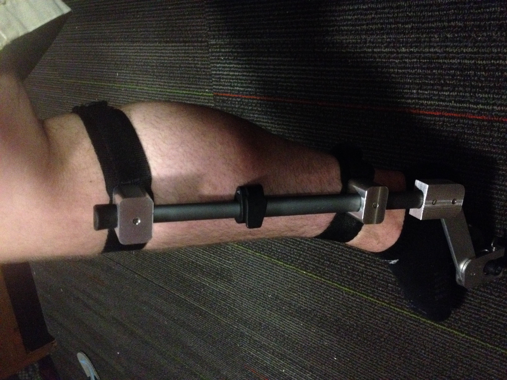

The Bicycle Knee Brace was made for a freshmen design course. I developed it in a team of four for the Shirley Ryan Ability Lab in Chicago. The purpose of the brace was to assist people who had experienced strokes in riding recumbent, three wheeled bicycles.
-
Bicycle Knee Brace
(Spring 2017)The final prototype
Although the users were capable of sitting on the bicycle, they often had trouble holding the leg on their affected side in place, as demonstrated in the adjacent figure. By supporting the leg at two points and moving with it through the cycle of pedaling, the Bicycle Knee Brace helped mitigate this problem.
Leg in correct position (Top) and leg in unsupported position (Bottom)
-

- 
TL to BR: An early mock up, the projection drawing for the upper bar collar, a part being manufactured on a milling machine, the pedal attachment point, a close-up of the upper clevis joint, the final prototype modeled on a (real) leg